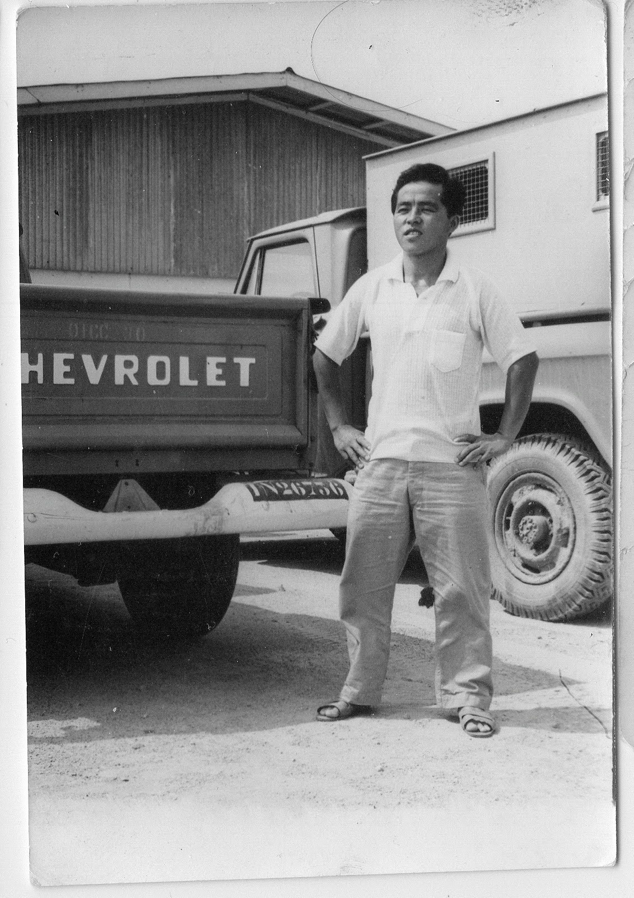
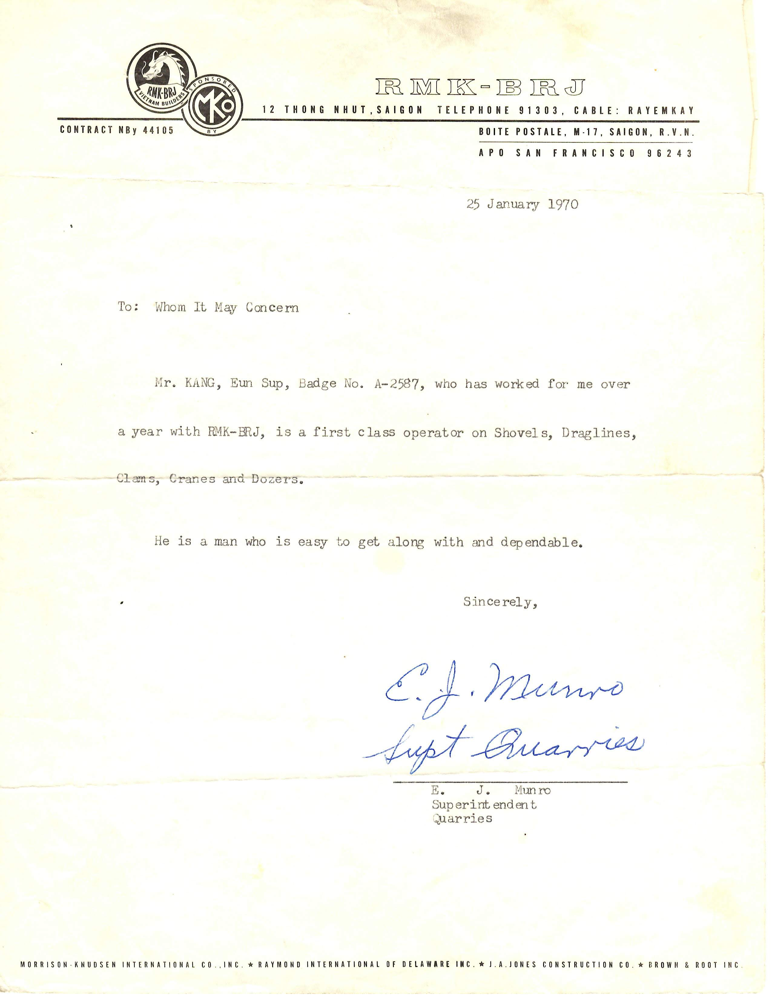

Like many immigrants before him, he was not gathered to his fathers physically, when he passed away 3 years ago.
It is longing of nearly all people, to buried like Biblical Patriarchs.1
But he was gathered to the place and to the people he associated with and cherished for most of his adult life.
My father lived first 44 years of his life in Korea. Then he spent the next 46 years in America
For the vast majority of his adult life he had contact with the American people and their institutions, its values and economic system and the ideal of freedom.
His maternal uncle sought him and and the family, often walking along the 120 mile journey from Seoul to their home in Hamkyung do.
He made it to Southern Korea before the War.
He most likely would have perished in the Korean War had he fought on the North Korean side.
His fate altered, he was a trained army personnel fighting alongside United Nations forces, and its chief sponsor, the United States of America
Like many young, poor people of his generation, some of the tenets of Communism appealed to him.
An abolition of class through revolution and the promise
to abolish private ownership of the means of production, advocating for collective ownership and control
However when he witnessed the outcome of socialism or communism his mind was changed
He fought North Koreans in battles and saw their dead and how utterly ill-prepared they were for the fight.
He was furious that the young people were dying to prove some theories that they neither understood nor would have supported if given a choice.
He became, in essence, a born-again anti-communist, a supporter of freedom from tyranny of communism
After the war, he secured a job with the remaining American forces, a 미군부대, 美軍部隊.
Learning a skill that would serve him well.
He would go on to work in and in Vietnam, where he was able to understand better the traits of American people.

He returned home in 1970 but he didn’t stay very long. He moved to Maryland, on April, 1974
During those 4 years in Korea, he met missionaries, invited them home and my family was baptized in May of 1971
 He died the morning of Tuesday, a week before Memorial Day.
The cemetery said, the weekend burial would be nearly impossible due to the expected Memorial Day crowd.
Then they suggested a remote possibility of a Friday graveside service.
He was interned on Friday, May 22nd.
Next day, the whole cemetery was filled with flags and flowers.
For a patriotic soldier, it was a loving welcome from the adopted country.
And a fitting goodbye for an immigrant family, originally from a small village in Northern Korea.
Someday, when the man-made and man-upheld boundaries are no longer, I hope to seek out records of fathers and mothers of past generations and their descendants and have another memorial service on behalf of my parents in North Korea.
Footnotes
https://bible.knowing-jesus.com/Genesis/49/29↩︎